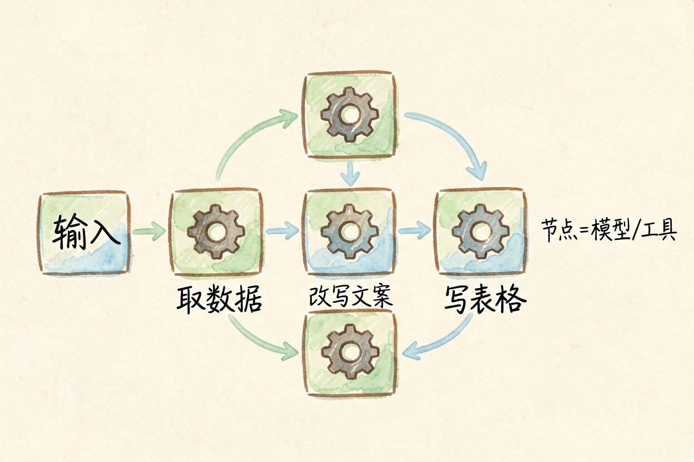
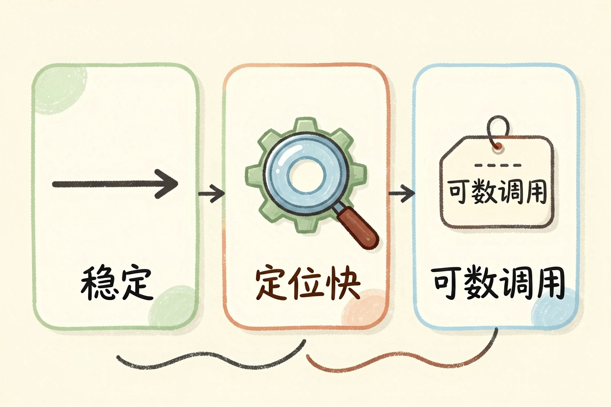
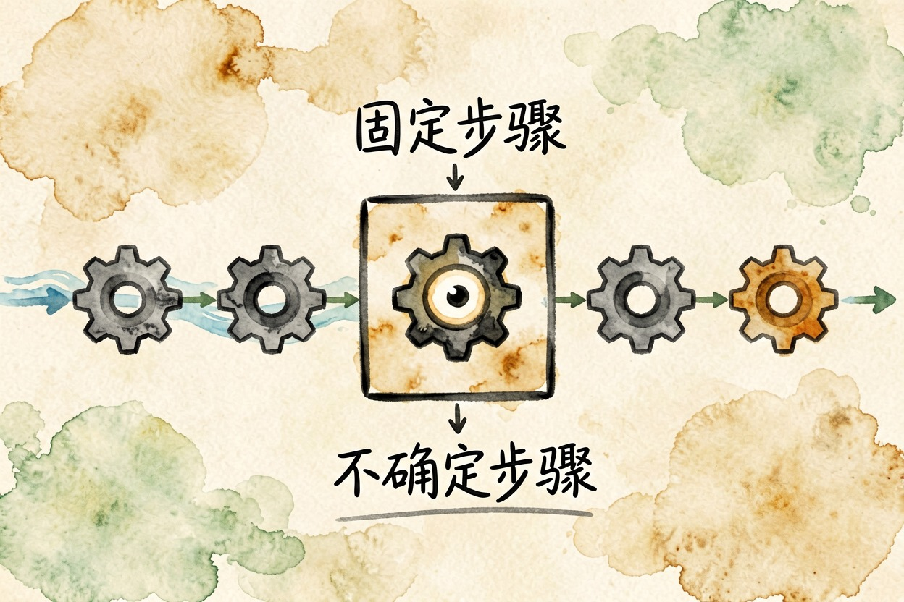
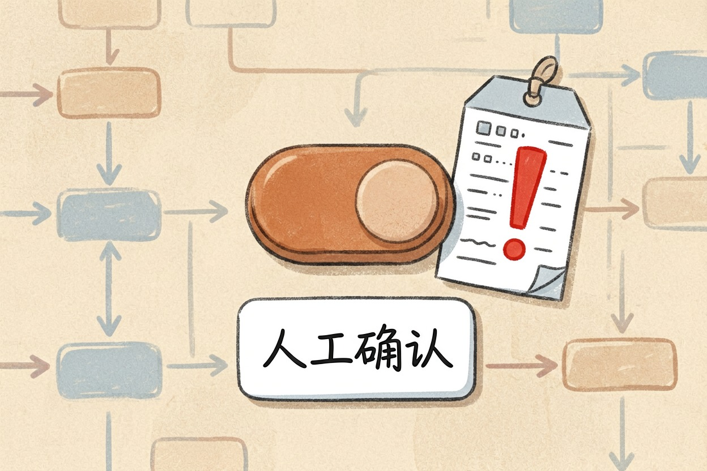

AI 工作流是什么？和智能体的区别究竟在哪 — Learntide
路线由你定死的叫工作流，只给目标让它自行摸索的叫智能体。活儿越规整，越该选前者，省钱也省心。
ai工作流是什么：路线先画好，模型照着走

ai工作流是什么？它是你先把步骤画成一张图，模型只在每个格子里干活。第一格取数据，第二格改写文案，第三格写进表格，顺序由你定死。模型没有选择权。
英文里的 workflow 是什么意思？直译就是「活儿流转的路线」。搬到 AI 场景，无非是把原来人点鼠标的那几步，换成机器自动跑一遍。
每个格子叫节点。节点可以是调模型，也可以是查数据库、发消息、写文件。把它们连起来，就是一条流水线。
智能体拿到的是目标，路线自己找
智能体不一样。你给它一个目标，比如「把这周的客户来信整理成跟进表」，它自己决定先查什么、调哪个工具、结果够不够、要不要再来一轮。
路线不写在图上，而是长在运行过程里。灵活是真灵活，飘也是真会飘。
有个粗糙但好记的判断法：步骤你自己能写清一二三，就先别急着上智能体。
ai工作流和智能体的区别，落在三件事上

第一是稳定性。同样的输入，工作流给出的结果基本一致。智能体每次走的路可能都不同，今天对了，明天换个说法就绕远。
第二是排错。工作流哪一格出错，看一眼那个节点的输入输出就能定位。智能体错了，你得把它一整串决策从头回看。
第三是花销。工作流的调用次数是可数的，几个节点就是几次。智能体自己决定转几圈，账单跟着浮动。
工作流：输入 → 分类节点 → 摘要节点 → 写入表格 → 结束
智能体：目标 → 思考 → 调工具 → 看结果 → 再思考 → 交付一个是直线，一个是圈。这张对照图基本能解释前面三条差别是怎么来的。
ai自动化流程怎么理解才不跑偏

多数人真正需要接管的，是那种固定套路的重复劳动。每天收三十封投诉信要分类，每周把周报里的数字挑出来，这类活的步骤好几年都不变。
交给工作流最划算。一次搭好，之后只管看结果对不对。
反过来，「帮我摸一下这个行业的底」这种活，步骤天天变。硬拆成固定节点，做出来处处别扭，还不如自己开着对话框问。
还有一种折中做法很实用：主链路用工作流锁死，只在某一个格子里放一个小智能体，让它专门处理那一步的不确定性。上下游依然可控，风险被关在一个格子里。
别把它当成万能的省事按钮

自动化的第一天通常最开心，第二周开始收账单。节点里塞长文本、每条数据都调一次大模型，费用涨得比想象快。能用关键词规则判断的地方，就别叫模型出场。
还有一点常被忽略：流程跑通不等于结果正确。对外发送的内容、涉及钱和承诺的动作，中间留一道人工确认，比事后补救省事得多。
工具选型上先想清楚你要哪一种。ai工作流是什么这个问题的答案，最终由你手上的活儿有多固定来决定，别一上来就追着智能体跑。
本文信息核对于 2026-08-08。AI 产品的价格、免费额度与功能变动频繁，实际以各工具官网当前说明为准。